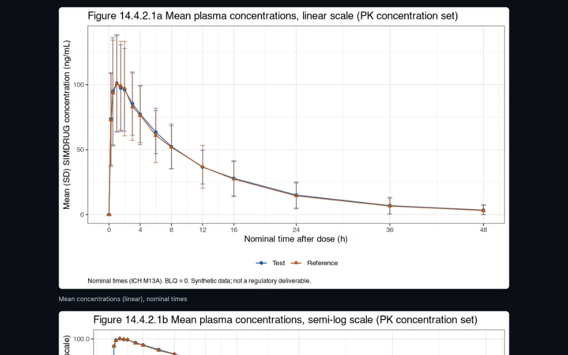

Worked example · 6 stages
A synthetic bioequivalence study, from sample size to CSR text
Runs
Synthetic data
One synthetic 2x2 bioequivalence study taken from sample size and randomization through the SAP, ADaM (admiral), NCA (PKNCA), the ICH M13A analysis, rtables/tern tables, QC and CSR text.
QC is same-author re-derivation; define.xml and ADRG not authored.